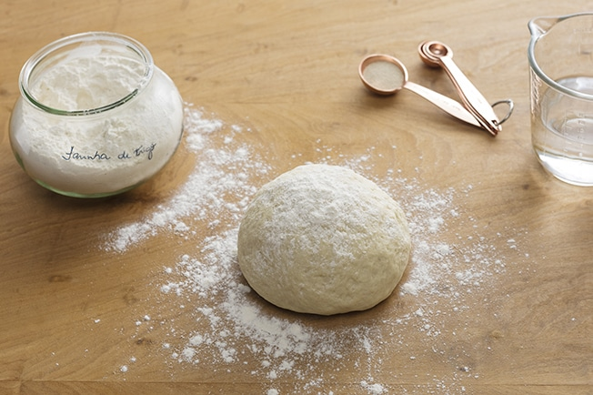

Recipe: Easy Pizza Crust
:max_bytes(150000):strip_icc():format(webp)/20171-quick-and-easy-pizza-crust-vilma-ng-1x1-1-2cea76fb3ef94c0f8796d4e240b2f433.jpg)
This is a great recipe when you don't want to wait for the dough to rise.
You just mix it and allow it to
rest for 5 minutes and then it's ready to go!
It yields a soft, chewy crust.
If you're looking for a homemade pizza crust recipe that's great for beginners, you're in luck.
This
top-rated recipe is super easy to throw together on a whim and it puts the store-bought stuff
to shame.
Learn how to make the best pizza crust of your life with just a few ingredients, find out
how to shape the
dough, and get our best storage secrets.
Ingredients for Pizza Crust:
You need just five ingredients (plus some warm water) to make this super simple pizza crust.
- Yeast - Active dry yeast is a leavening agent, which means it's the ingredient that causes
the
pizza dough to rise.
- Sugar - To activate your yeast, you'll need to dissolve it in warm water with a teaspoon
of
sugar. The sugar gives the yeast something to eat and speeds up the activation process.
You'll know your
yeast is active when it becomes bubbly and frothy on top.
- Bread Flour - Bread flour is ideal for pizza crust because it creates chewier results than
all-purpose flour. This is because it contains more protein, which helps produce lots of gluten.
Gluten
is what gives the crust elasticity.
- Olive Oil - Olive oil serves a couple purposes when it comes to pizza crust: Not only does it
add
color and flavor, but it creates a barrier between the oil and water. This oily barrier prevents
sogginess.
- Salt - A little bit of salt goes a long way. Salt adds flavor, strengthens the gluten (creating a
chewier crust), and slows down fermentation (resulting in a better rise).

Ingredients:
- 1 cup warm water (110 degrees F/45 degrees C)
- 1 (.25 ounce) package active dry yeast
- 1 teaspoon white sugar
- 2 ½ cups bread flour
- 2 tablespoons olive oil
- 1 teaspoon salt
:max_bytes(150000):strip_icc():format(webp)/Quick-and-Easy-Pizza-Crust2-2000-d38b79fa6b8e4a23ab9dac62dd7afff8.jpg)
How to Make Pizza Crust:
- Preheat oven to 450 degrees F (230 degrees C). Lightly grease a pizza pan.
- Place warm water in a bowl; add yeast and sugar. Mix and let stand until creamy, about
10 minutes.
- Add flour, oil, and salt to the yeast mixture; beat until smooth. You can do this by hand
or use a stand
mixer fitted with a dough hook to make it easier. Let rest for 5 minutes.
- Turn dough out onto a lightly floured surface and pat or roll into a 12-inch circle. Transfer
to the
prepared pizza pan.
- Spread crust with sauce and toppings of your choice.
- Bake in the preheated oven until golden brown, 15 to 20 minutes. Remove from the oven
and let cool for 5
minutes before serving.
Cook's Note:
You can use all-purpose flour, but the bread flour makes a superior crust.
If you have a pizza
stone, dust it with cornmeal and use it instead of a greased pizza pan.
Go to Home